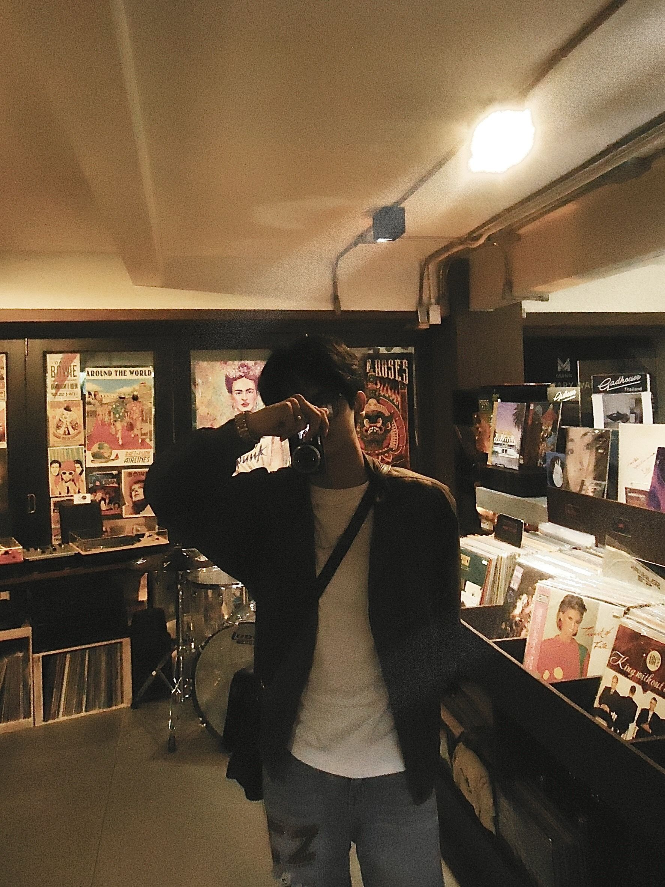
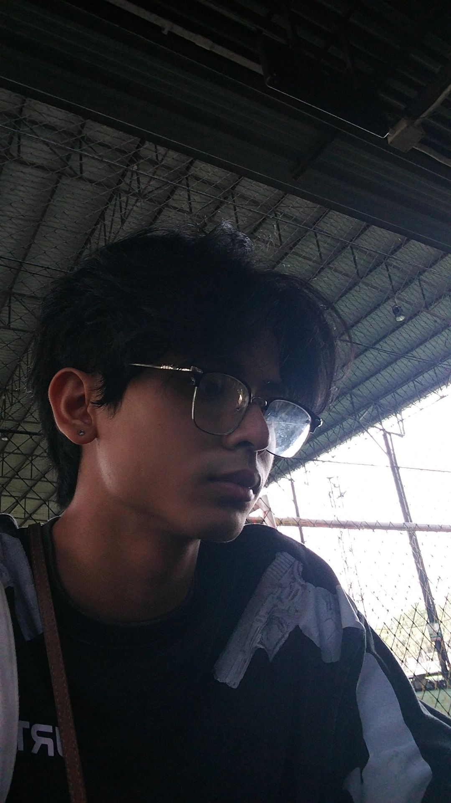

Target
In the future, I intend to develop my professional skills in my chosen field. which is the development of computer programs I have a lot of friends. Enjoy living life.

Plan
- 1st year:In my first year, I adjusted to student life. Learn to manage your time and participate in club activities that interest
- 2st year:The second year is a year of self-discovery. I should be able to figure out what I want to do in this career.
- 3st year:I should aim for an internship in third year to help me gain practical experience in the field I am learning.
- 4st year:In my senior year, I prepared for my career by creating a final project that showcased the skills and knowledge I had learned.
